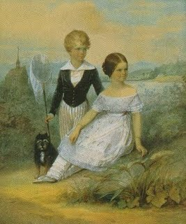
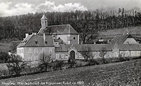

Duchess in Bavaria
Born Elisabeth Amalie Eugenie on 24 December 1837 in Munich, Bavaria, she was the fourth child of Duke Maximilian Joseph in Bavaria and Princess Ludovika of Bavaria, the half-sister of King Ludwig I of Bavaria. Maximilian was considered to be rather peculiar; he had a childish love of circuses and traveled the Bavarian countryside to escape his duties. The family's homes were the Herzog-Max-Palais in Munich during winter and Possenhofen Castle in the summer months, far from the protocols of court. "Sisi" and her siblings grew up in a very unrestrained and unstructured environment; she often skipped her lessons to go riding about the countryside.

In 1853, Princess Sophie of Bavaria, the domineering mother of 23-year-old Emperor Franz Joseph, preferring to have a niece as a daughter-in-law rather than a stranger, arranged a marriage between her son and her sister Ludovika's eldest daughter, Helene ("Néné"). Although the couple had never met, Franz Joseph's obedience was taken for granted by the archduchess, who was once described as "the only man in the Hofburg" for her authoritarian manner. The Duchess and Helene were invited to journey to the resort of Bad Ischl, Upper Austria to receive his formal proposal of marriage. Fifteen-year-old Sisi accompanied her mother and sister and they traveled from Munich in several coaches. They arrived late as the Duchess, prone to migraine, had to interrupt the journey; the coach with their gala dresses never did arrive. The family was still in mourning over the death of an aunt so they were dressed in black and unable to change to more suitable clothing before meeting the young Emperor. While black did not suit eighteen-year-old Helene's dark coloring, it made her younger sister's blonder looks more striking by contrast.
Helene was a pious, quiet young woman, and she and Franz Joseph felt ill at ease in each other's company, but he was instantly infatuated with her younger sister. He did not propose to Helene, but defied his mother and informed her that if he could not have Elisabeth, he would not marry at all. Five days later their betrothal was officially announced. The couple were married eight months later in Vienna at the Augustinerkirche on 24 April 1854. The marriage was finally consummated three days later, and Elisabeth received a dower equal to today's 240,000 USD.
Empress of Austria
After enjoying an informal and unstructured childhood, Elisabeth, who was shy and introverted by nature, and more so among the stifling formality of Habsburg court life, had difficulty adapting to the Hofburg and its rigid protocols and strict etiquette. Within a few weeks, Elisabeth started to display health problems: she had fits of coughing and became anxious and frightened whenever she had to descend a narrow steep staircase.
She was surprised to find she was pregnant and gave birth to her first child, a daughter, Archduchess Sophie of Austria (1855–1857), just ten months after her wedding. The elder Archduchess Sophie, who often referred to Elisabeth as a "silly young mother", not only named the child (after herself) without consulting the mother, but took complete charge of the baby, refusing to allow Elisabeth to breastfeed or otherwise care for her own child. When a second daughter, Archduchess Gisela of Austria (1856–1932), was born a year later, the Archduchess took the baby away from Elisabeth as well.
The fact that she had not produced a male heir made Elisabeth increasingly unwanted in the palace. One day she found a pamphlet on her desk with the following words underlined:
...The natural destiny of a Queen is to give an heir to the throne. If the Queen is so fortunate as to provide the State with a Crown-Prince this should be the end of her ambition – she should by no means meddle with the government of an Empire, the care of which is not a task for women... If the Queen bears no sons, she is merely a foreigner in the State, and a very dangerous foreigner, too. For as she can never hope to be looked on kindly here, and must always expect to be sent back whence she came, so will she always seek to win the King by other than natural means; she will struggle for position and power by intrigue and the sowing of discord, to the mischief of the King, the nation, and the Empire...
Her mother-in-law is generally considered to be the source of the malicious pamphlet.The accusation of political meddling referred to Elisabeth's influence on her husband regarding his Italian and Hungarian subjects. When she traveled to Italy with him she persuaded him to show mercy toward political prisoners. In 1857 Elisabeth visited Hungary for the first time with her husband and two daughters, and it left a deep and lasting impression upon her, probably because in Hungary she found a welcome respite from the constraints of Austrian court life. It was "the first time that Elisabeth had met with men of character in Franz Joseph's realm, and she became acquainted with an aristocratic independence that scorned to hide its sentiments behind courtly forms of speech... She felt her innermost soul reach out in sympathy to the proud, steadfast people of this land..." Unlike the archduchess, who despised the Hungarians, Elisabeth felt such an affinity for them that she began to learn Hungarian; the country reciprocated in its adoration of her.
This same trip proved tragic as both of Elisabeth's children became ill with diarrhea. While Gisela recovered quickly, two-year-old Sophie grew steadily weaker, then died. It is generally assumed today that she died of typhus. Her death pushed Elisabeth, who was already prone to bouts of melancholy, into periods of heavy depression, which would haunt her for the rest of her life. She turned away from her living daughter, began neglecting her, and their relationship never recovered.
In December 1857 Elisabeth became pregnant for the third time in as many years, and her mother, who had been concerned about her daughter's physical and mental health, hoped that this new pregnancy would help her recover.
return to the top↑
Physical regimen
At 172 cm (5 feet 8 inches), Elisabeth was unusually tall. Even after four pregnancies she maintained her weight at approximately 50 kg (110 pounds, 7 st 12 lbs) for the rest of her life. She achieved this through fasting and exercise, such as gymnastics and riding.
Elisabeth was strongly attached to her parents, especially to her mother, and was still a child in search of an identity of her own when an adult role with unusual obligations and restrictions was imposed upon her. She had no control in her new life and was unable to identify herself as both the spouse of the emperor and a young mother. As a result, she attempted to recreate her childhood with its lack of obligations. The only quality for which she felt herself appreciated, and over which she had control, was her physical appearance, so she started cultivating this as the primary source of her self-esteem. Elisabeth was reported to be obsessively achievement-oriented and almost compulsively perfectionistic in her attitudes. Her emotional well-being was dependent on her own beauty and image.
In deep mourning after her daughter Sophie's death, Elisabeth refused to eat for days; a behavior that would reappear in later periods of melancholy and depression. Whereas she previously had supper with the family, she now began to avoid this; and if she did eat with them, she ate quickly and very little. Whenever her weight threatened to exceed fifty kilos, a "fasting cure" or "hunger cure" would follow, which involved almost complete fasting. Meat itself often filled her with disgust, so she either had the juice of half-raw beefsteaks squeezed into a thin soup, or else adhered to a diet of milk and eggs.
Elisabeth emphasised her extreme slenderness through the practice of "tight-lacing". During the peak period of 1859–60, which coincided with Franz-Joseph's political and military defeats in Italy, her sexual withdrawal from her husband after three pregnancies in rapid succession, and her losing battle with her mother-in-law for dominance in rearing her children, she reduced her waist to 16 inches in circumference. Corsets of the time were split-busk types, fastening up the front with hooks and eyes, but Elisabeth had more rigid, solid-front ones made in Paris out of leather, "like those of Parisian courtesans", probably to hold up under the stress of such strenuous lacing, "a proceeding which sometimes took quite an hour". The fact that "she only wore them for a few weeks" may indicate that even leather proved inadequate for her needs. Elisabeth's defiant flaunting of this exaggerated dimension angered her mother-in-law, who expected her to be pregnant continuously.
Although on her return to Vienna in August 1862, a lady-in-waiting reported that “she eats properly, sleeps well, and does not tight-lace any more”, her clothing from this time until her death still measured only 18 1/2 – 19 1/2 inches around the waist, which prompted the Prince of Hesse to describe her as “almost inhumanly slender”. She developed a horror of fat women and transmitted this attitude to her youngest daughter, who was terrified when, as a little girl, she first met Queen Victoria.
In her youth Elisabeth followed the fashions of the age, which for many years were cage-crinolined hoop skirts, but when fashion began to change, she was at the forefront of abandoning the hoop skirt for a tighter and leaner silhouette. She disliked both expensive accoutrements and the protocol that dictated constant changes of clothing, preferring simple, monochromatic riding habit-like attire. She never wore petticoats or any other "underlinen", as they added bulk, and was often literally sewn into her clothes, to bypass waistbands, creases, and wrinkles and to further emphasize the "wasp waist" that became her hallmark.
The empress developed extremely rigorous and disciplined exercise habits. Every castle she lived in was equipped with a gymnasium, the Knights' Hall of the Hofburg was converted into one, mats and balance beams were installed in her bedchamber so that she could practise on them each morning, and the imperial villa at Ischl was fitted with gigantic mirrors so that she could correct every movement and position. She took up fencing in her 50s with equal discipline. A fervent horsewoman, she rode every day for hours on end, becoming probably the world's best, as well as best-known, female equestrian at the time. When, due to sciatica, she could no longer endure long hours in the saddle, she substituted walking, subjecting her attendants to interminable marches and hiking tours in all weather.
In the last years of her life, Elisabeth became even more restless and obsessive, weighing herself up to three times a day. She regularly took steam baths to prevent weight gain; by 1894 she had wasted away to near emaciation, reaching her lowest point of 95.7 lbs (43.5 kg). There were some aberrations in Elisabeth's diet that appear to be signs of binge eating, On one occasion in 1878 the Empress astonished her travelling companions when she unexpectedly visited a restaurant incognito, where she drank champagne, ate a broiled chicken and an Italian salad, and finished with a "considerable quantity of cake". She may have satisfied her urge to binge in secret on other occasions; in 1881 she purchased an English country house and had a spiral staircase built from her living room into the kitchen, so that she could reach it in private.
return to the top↑
Beauty
In addition to her rigorous exercise regimen Elisabeth practiced demanding beauty routines. Daily care of her abundant and extremely long hair, which in time turned from the dark blonde of her youth to chestnut brunette, took at least three hours. Her hair was so long and heavy that she often complained that the weight of the elaborate double braids and pins gave her headaches. Her hairdresser, Franziska Feifalik, was originally a stage hairdresser at the Wiener Burgtheater.
Responsible for all of Elisabeth's ornate hairstyles, she generally accompanied her on her wanderings. Feifalik was forbidden to wear rings and required to wear white gloves; after hours of dressing, braiding, and pinning up the Empress' tresses, the hairs that fell out had to be presented in a silver bowl to her reproachful empress for inspection. When her hair was washed with a combination of eggs and cognac once every two weeks, all activities and obligations were cancelled for that day. Before her son's death, she tasked Feifalik with tweezing gray hairs away, but at the end of her life her hair was described as "abundant, though streaked with silver threads."
Elisabeth used these captive hours during grooming to learn languages; she spoke fluent English and French, and added modern Greek to her Hungarian studies. Her Greek tutor, Constantin Christomanos, described the ritual:
Hairdressing takes almost two hours, she said, and while my hair is busy, my mind stays idle. I am afraid that my mind escapes through the hair and onto the fingers of my hairdresser. Hence my headache afterwards. The Empress sat at a table which was moved to the middle of the room and covered with a white cloth. She was shrouded in a white, laced peignoir, her hair, unfastened and reaching to the floor, enfolded her entire body.
Unlike other women of her time, Elisabeth used cosmetics and perfume sparingly, as she wished to showcase her natural beauty, but she tested countless beauty products prepared in the court pharmacy, or prepared by a lady-in-waiting in her own apartments, to preserve it. Although one favorite, "Crème Céleste", was compounded from white wax, spermaceti, sweet almond oil, and rosewater; she attached far less importance to creams and emollients, and experimented with a wide variety of facial tonics and waters, from which she apparently expected more results. Elisabeth slept without a pillow on a metal bedstead, all the better to retain her upright posture, with either raw veal or crushed strawberries lining her nightly leather facial mask. She was heavily massaged and often slept with cloths soaked in either violet- or cider-vinegar above her hips to preserve her slim waist, and her neck was wrapped with cloths soaked in Kummerfeld-toned washing water. To further preserve her skin tone, she took both a cold shower every morning (which in later years aggravated her arthritis) and an olive oil bath in the evening.
After age thirty-two, she did not sit for any more portraits, and would not allow any photographs of her to be taken, so that her public image of the eternal beauty would not be challenged. The few photographs that were taken without her knowledge show a woman who was “graceful, but almost too slender”.
return to the top↑
Marriage
Franz Joseph was passionately in love with his wife, but she did not reciprocate his feelings fully and felt increasingly stifled by the rigidness of court life. He was an unimaginative and sober man, a political reactionary who was still guided by his mother and her adherence to the strict Spanish Court Ceremonial (Spanisches Hofzeremoniell) regarding both his public and domestic life, whereas Elisabeth inhabited a different world altogether. Restless to the point of hyperactivity, naturally introverted, and emotionally distant from her husband, she fled him as well as her duties of life at court, avoiding them both as much as she could. He indulged her wanderings, but constantly and unsuccessfully tried to tempt her into a more domestic life with him.
Elisabeth slept very little and spent hours reading and writing at night, and even took up smoking, a shocking habit for women which made her the further subject of already avid gossip. She had a special interest in history, philosophy, and literature, and developed a profound reverence for the German lyric poet and radical political thinker, Heinrich Heine, whose letters she collected.
She tried to make a name for herself by writing Heine-inspired poetry. Referring to herself as Titania, Shakespeare's Fairy Queen, Elisabeth expressed her intimate thoughts and desires in a large number of romantic poems, which served as a type of secret diary.[5] Most of her poetry relates to her journeys, classical Greek and romantic themes, and ironic commentary on the Habsburg dynasty. Her wanderlust is defined by her own work:
O'er thee, like thine own sea birds
I'll circle without rest
For me earth holds no corner
To build a lasting nest.
Elisabeth was an emotionally complex woman, and perhaps due to the melancholy and eccentricity that was considered a given characteristic of her Wittelsbach lineage (the best-known member of the family being her favorite cousin, the eccentric Ludwig II of Bavaria),[23] she was interested in the treatment of the mentally ill. In 1871, when the Emperor asked her what she would like as a gift for her Saint's Day, she listed a young tiger and a medallion, but: "...a fully equipped lunatic asylum would please me most".
return to the top↑

Birth of a son
On 21 August 1858, Elisabeth finally gave birth to an heir, Rudolf (1858–1889). The 101-gun salute announcing the welcome news to Vienna also signaled an increase in her influence at court. This, combined with her sympathy toward Hungary, made Elisabeth an ideal mediator between the Magyars and the emperor. Her interest in politics had developed as she matured; she was liberal-minded, and placed herself decisively on the Hungarian side in the increasing conflict of nationalities within the empire.
Elisabeth was a personal advocate for Hungarian Count Gyula Andrássy, who also was rumored to be her lover.[5] Whenever difficult negotiations broke off between the Hungarians and the court, they were resumed with her help. During these protracted dealings, Elisabeth suggested to the emperor that Andrássy be made the Premier of Hungary as part of a compromise, and in a forceful attempt to bring the two men together, strongly admonished her husband:
I have just had an interview with Andrássy. He set forth his views clearly and plainly. I quite understood them and arrived at the conclusion that if you would trust him – and trust him entirely – we might still be saved, not only Hungary, but the monarchy, too.... I can assure you that you are not dealing with a man desirous of playing a part at any price or striving for a position; on the contrary, he is risking his present position, which is a fine one. But approaching shipwreck, he, too, is prepared to do all in his power to save it; what he possesses – his understanding and influence in the country – he will lay at your feet. For the last time I beg you in Rudolf's name not to lose this, at the last moment...
...If you say 'No,' if at the last moment you are no longer willing to listen to disinterested counsels. then... you will be relieved forever from my future... and nothing will remain to me but the consciousness that whatever may happen, I shall be able to say honestly to Rudolf one day; "I did everything in my power. Your misfortunes are not on my conscience."
When Elisabeth was still blocked from controlling her son's upbringing and education, she openly rebelled. Due to her nervous attacks, fasting cures, severe exercise regime, and frequent fits of coughing, the state of her health had become so alarming that in October 1860 she was reported to suffer not only from "green-sickness" (anemia), but also from physical exhaustion.[5] A serious lung complaint of “Lungenschwindsucht" (tuberculosis) was feared by Dr. Skoda, a lung specialist, who advised a stay on Madeira.[25] During this time the court was rife with malicious rumors that Franz Joseph was having a liaison with an actress named Frau Roll,[25] leading to speculation today that Elisabeth's symptoms could have been anything from psychosomatic to a result of venereal disease.
Elisabeth seized on the excuse and left her husband and children, to spend the winter in seclusion. Six months later, a mere four days after her return to Vienna, she again experienced coughing fits and fever. She ate hardly anything and slept badly, and Dr. Skoda observed a recurrence of her lung disease. A fresh rest cure was advised, this time on Corfu, where she improved almost immediately. If her illnesses were psychosomatic, abating when she was removed from her husband and her duties, her eating habits were causing physical problems as well. In 1862 she had not seen Vienna for a year when her family physician, Dr. Fischer of Munich, examined her and observed serious anemia and signs of "dropsy" (edema). Her feet were sometimes so swollen that she could walk only laboriously, and with the support of others.[26] On medical advice, she went to Bad Kissingen for a cure. Elisabeth recovered quickly at the spa, but instead of returning home to assuage the gossip about her absence she spent more time with her own family in Bavaria. In August 1862, after a two-year absence, she returned shortly before her husband's birthday, but immediately suffered from a violent "migraine" and vomited four times en route, which supports the theory that her primary complaints were stress-related and psychosomatic.
Rudolf was now four years old, and Franz Joseph hoped for another son to safeguard the succession. Dr. Fischer claimed that the health of the empress would not permit another pregnancy, and she would regularly have to go to Kissingen for a cure. Elisabeth fell into her old pattern of escaping boredom and dull court protocol through frequent walking and riding, using her health as an excuse to avoid both official obligations and sexual intimacy. Preserving her youthful appearance was also an important influence in her avoidance of pregnancies:
"Children are the curse of a woman, for when they come, they drive away Beauty, which is the best gift of the gods".
She was now more assertive in her defiance of her husband and mother-in-law than before, openly opposing them on the subject of the military education of Rudolf, who, like his mother, was extremely sensitive and not suited to the life at court.
return to the top↑
Hungarian coronation
After having used every excuse to avoid pregnancy, Elisabeth later decided that she wanted a fourth child. Her decision was at once a deliberate personal choice and a political negotiation: by returning to the marriage, she ensured that Hungary, with which she felt an intense emotional alliance, would gain an equal footing with Austria.
The Austro-Hungarian Compromise of 1867 created the dual monarchy of Austria–Hungary. Andrassy was made the first Hungarian prime minister and in return, he saw that Franz Joseph and Elisabeth were officially crowned King and Queen of Hungary in June.
As a coronation gift, Hungary presented the royal couple with a country residence in Gödöllő, twenty miles east of Buda-Pest. In the next year, Elisabeth lived primarily in Gödöllő and Buda-Pest, leaving her neglected and resentful Austrian subjects to trade rumors that if the infant she was expecting were a son, she would name him Stephen, after the patron saint and first king of Hungary. The issue was avoided when she gave birth to a daughter, Marie Valerie (1868–1924). Dubbed the "Hungarian child", she was born in Buda-Pest ten months after her parents' coronation and baptised there in April.[24] Determined to bring this last child up by herself, Elisabeth finally had her way. She poured all her repressed maternal feelings on her youngest daughter to the point of nearly smothering her. Sophie's influence over Elisabeth's children and the court faded, and she died in 1872.
return to the top↑
Travels

After having achieved this victory, Elisabeth did not stay to enjoy it, but instead embarked on a life of travel, and saw little of her children. “If I arrived at a place and knew that I could never leave it again, the whole stay would become hell despite being paradise”. After her son's death, she commissioned the building of a palace in Corfu which she named the Achilleion, after Homer's hero Achilles in The Iliad. After her death, the building was purchased by German Emperor Wilhelm II.[4] Later it was acquired by the nation of Greece and converted to a museum.
Newspapers published articles on her passion for riding sports, diet and exercise regimens, and fashion sense. She often shopped at the Budapest fashion house, Antal Alter (now Alter és Kiss), which had become very popular with the fashion-crazed crowd. Newspapers also reported on a series of reputed lovers.[citation needed] Although there is no verifiable evidence of her having an affair, one of her alleged lovers was George "Bay" Middleton, a dashing Anglo-Scot. He had been named as the probable lover of Lady Henrietta Blanche Hozier and father of Clementine Ogilvy Hozier (the wife of Winston Churchill). To prevent him from becoming lonely during her long absences, Elisabeth encouraged her husband Franz Joseph's close relationship with actress Katharina Schratt.
return to the top↑
Mayerling incident
In 1889 Elisabeth's life was shattered by the death of her only son Rudolf, who was found dead together with his young lover Baroness Mary Vetsera, in what was suspected to be a murder-suicide on Rudolf's part. The scandal was known as the Mayerling Incident after the name of Rudolf's hunting lodge in Lower Austria, where they were found.
Elisabeth never recovered from the tragedy, sinking further into melancholy. Within a few years, she had lost her father, Max Joseph (in 1888), her only son, Rudolf (1889), her sister, Helene (1890) and her mother, Ludovika (1892). After Rudolf's death she was thought to have dressed only in black for the rest of her life, although a light blue and cream gown discovered by The Hofburg's Sisi Museum dates to this time.[4] To compound her losses, Count Gyula Andrássy died a year later, on 18 February 1890. "My last and only friend is dead," she lamented. Marie Valerie declared, "...she clung to him with true and steadfast friendship as she did perhaps, to no other person."[29] Whether their personal relationship was an intimate one or not, her feelings for him were ones she also felt for his country, and that she knew were wholeheartedly reciprocated by the Magyars.
The Mayerling scandal increased public interest in Elisabeth, and she continued to be an icon and a sensation in her own right wherever she went. She wore long black gowns that could be buttoned up at the bottom, and carried a white parasol made of leather in addition to a concealing fan to hide her face from the curious.
Elisabeth spent little time in Vienna with her husband. Their correspondence increased during their last years, however, and their relationship became a warm friendship. On her imperial steamer, Miramar, Empress Elisabeth travelled through the Mediterranean. Her favourite places were Cap Martin on the French Riviera, and also Sanremo on the Ligurian Riviera, where tourism had started only in the second half of the nineteenth century; Lake Geneva in Switzerland; Bad Ischl in Austria, where the imperial couple would spend the summer; and Corfu. The Empress also visited countries not usually visited by European royals at the time: Morocco, Algeria, Malta, Turkey, and Egypt. The endless travels became a means of escape for the empress from her life and her misery.
return to the top↑